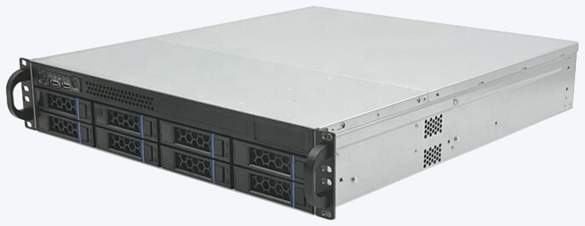
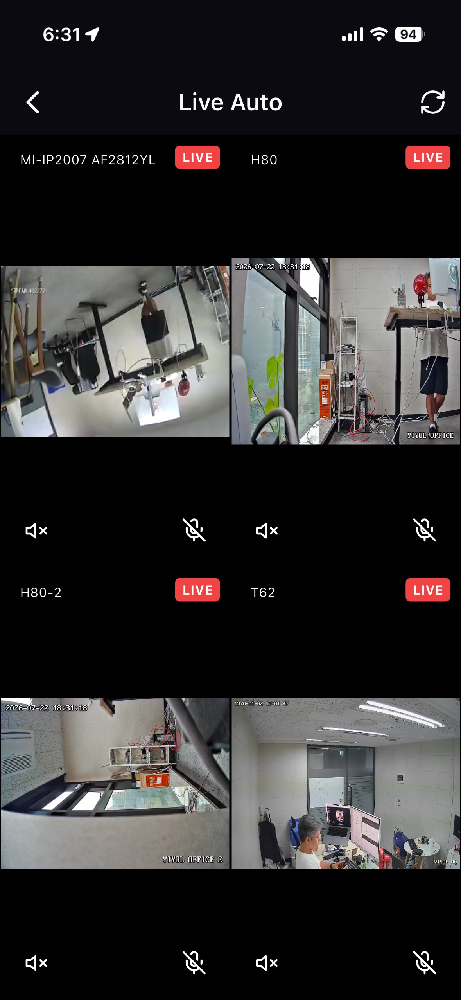
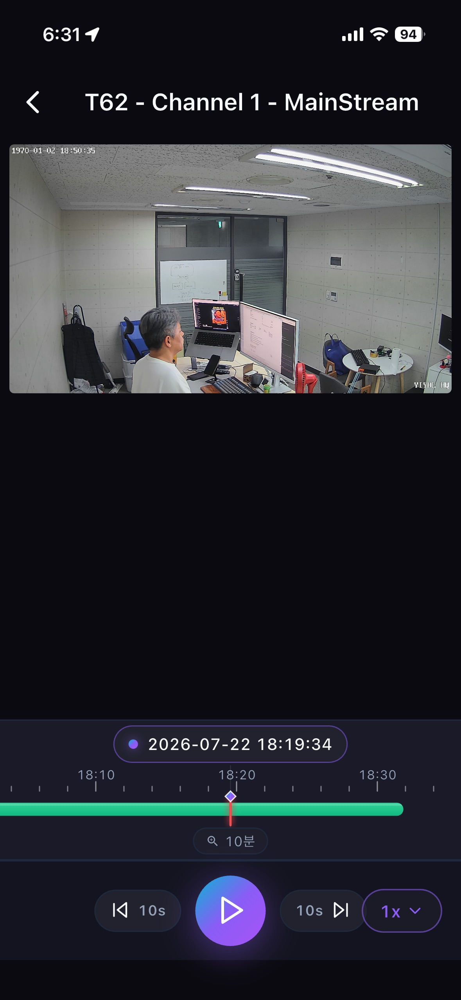

NOX 소프트웨어
NOX software
카메라 영상을 받아 저장하고, 필요한 시점을 다시 찾고, 누가 무엇을 볼 수 있는지 관리하는 소프트웨어입니다. 녹화·저장(NVR)과 통합 관제(VMS)를 한 소프트웨어가 함께 담당합니다. YIYOL이 만든 어플라이언스에 탑재해 공급하는 것이 기본이고, 소프트웨어만 별도로 공급하거나 파트너 장비에 얹는 것도 가능합니다.
Software that takes in camera streams, stores them, lets you find the moment you need, and controls who gets to see what. Recording and storage (NVR) and unified monitoring (VMS) are handled by the same software. It normally ships on an appliance we build, but it can be supplied on its own or run on a partner's hardware.
녹화 · 저장
Recording & storage
기존 카메라를 교체하지 않고 있는 그대로 연결해 영상을 받아 저장합니다. 보존 정책에 따라 자동으로 정리되고, 필요한 시점은 타임라인에서 바로 찾아 재생합니다.
Connect to the cameras already installed and record what they send. Footage ages out under your retention policy, and any moment can be found and replayed straight from the timeline.
통합 관제
Unified monitoring
여러 현장의 카메라와 NVR을 한 화면에서 봅니다. WebRTC·WHIP로 지연을 줄였고, 사용자별로 볼 수 있는 채널과 쓸 수 있는 기능을 나눠 줄 수 있습니다.
See cameras and NVRs across every site on one screen. WebRTC and WHIP keep latency down, and each user gets only the channels and controls you grant them.

영상과 데이터는 나가지 않습니다
Your video and data stay put
많은 AI 서비스가 데이터를 클라우드로 올려야 작동합니다. NOX는 영상 저장과 관리는 물론, 그 위에 올라가는 AI 판단·실행까지 사용자 장비(on-prem)에서 수행하는 것을 기본으로 합니다. 공정 영상, 설비 데이터, 출입 기록처럼 외부로 나가면 안 되는 자료를 다루는 현장에서 이 차이는 도입 가능 여부를 가릅니다.
Plenty of AI services only work once your data is uploaded. NOX keeps recording and management — and any AI judgment layered on top — on your own hardware by default. For sites handling process footage, equipment data, or access records that must not leave the premises, that difference decides whether adoption is possible at all.
- 영상·센서 데이터 전 과정 on-prem 처리Video and sensor data handled entirely on-prem
- 폐쇄망·망분리 환경에서도 동작Runs in air-gapped and network-segregated environments
- 국가용 보안요구사항 V3.0 대비 설계 · 보안적합성 검증 대응Designed to National Security Requirements V3.0 · security certification support
- 판단 근거와 조치 이력을 감사 가능한 형태로 보관Reasoning and action history retained in auditable form
이미 쓰고 계신 시스템으로 이어집니다
It flows into the systems you already run
영상과 이벤트가 NOX 안에서만 머무르면 반쪽입니다. WebHook과 REST API를 통해 사내 시스템으로 이벤트를 내보내고, 반대로 외부 시스템의 상태를 받아 판단에 반영합니다. 양방향이어야 "상황에 맞는 조치 선택"이 가능해집니다.
Footage and events that stay inside NOX are only half the job. Events go out to your systems over WebHooks and REST APIs, and state comes back in to inform the next judgment. It has to work both ways for "choose the action that fits" to mean anything.
- 이벤트 발생 시 WebHook 호출 — 페이로드와 조건을 시나리오별로 정의WebHook calls on event, with payload and conditions defined per scenario
- ERP · MES · CMMS · 그룹웨어 · 메신저 연동Integrates with ERP, MES, CMMS, groupware, and messengers
- 해당 시점 영상 클립 자동 추출 후 함께 전달Automatically extracts and attaches the relevant video clip
- 외부 시스템 상태를 받아 판단 조건에 반영Pulls external system state into the judgment conditions
NOX-A08 시리즈
NOX-A08 Series
YIYOL이 직접 설계한 하드웨어에 NOX 소프트웨어를 탑재해 하나로 공급하는 어플라이언스입니다. 영상을 받아 저장하면서, 필요하면 AI 판단까지 같은 장비에서 수행하고 그 결과에 따라 후속조치를 내보냅니다. 8베이 핫스왑 SATA를 갖춘 2U 랙마운트 어플라이언스로 32·64·128채널 3개 모델이 제공되며, 영상은 항상 사용자 장비(on-prem)에 남습니다.
Hardware we design ourselves, shipped with the NOX software already on it. It ingests and stores video and — when you want it — runs the AI judgment on the same box and pushes the follow-up out from there. A 2U rackmount appliance with 8 hot-swap SATA bays in three models — 32, 64, and 128 channels — with every recording staying on your own hardware.

NOX-A08 시리즈
NOX-A08 Series
하나의 2U 랙마운트 플랫폼에 8개의 핫스왑 SATA 베이(최대 240TB)를 담은 NVR 어플라이언스 시리즈. 32·64·128채널 3개 모델이 동일한 플랫폼을 공유하며, 이중 LAN·하드웨어 워치독으로 무인 환경에서도 스스로 복구하고, 3개의 독립 출력(2×4K HDMI + VGA)으로 대형 관제 화면을 구성합니다.
An NVR appliance series built on one 2U rackmount platform with 8 hot-swap SATA bays (up to 240TB). Three models — 32, 64, and 128 channels — share the same platform, with dual LAN and a hardware watchdog for self-healing in unattended sites, and three independent outputs (2×4K HDMI + VGA) for large monitoring walls.
- 32 / 64 / 128채널 3개 모델 · 동일 8베이 플랫폼Three models (32/64/128 ch) on one 8-bay platform
- 8 SATA 핫스왑 베이 · 최대 240TB8 hot-swap SATA bays · up to 240TB
- 이중 LAN · 하드웨어 워치독 기반 무중단 운영Dual LAN and hardware watchdog for nonstop operation
- 2×4K HDMI + VGA 3개 독립 출력Three independent outputs — 2×4K HDMI + VGA
- 순수 국산 설계 · 국가용 보안요구사항 V3.0 대비Designed and built in Korea · aligned to National Security Requirements V3.0
채널 규모별 3개 모델
Three models by channel capacity
모든 모델이 8개의 핫스왑 SATA 베이를 갖춘 2U 랙마운트 어플라이언스입니다. 채널 수만 다르며, 세 모델 모두 곧 함께 출시됩니다.
Every model is a 2U rackmount appliance with 8 hot-swap SATA bays — differing only in channel count. All three launch together soon.
NOX-A08128
대규모 현장을 위한 128채널 모델. 최대 용량으로 통합 녹화합니다.
A 128-channel model for large sites — maximum capacity in one box.
NOX-A08064
중규모 현장을 위한 64채널 모델. 동일한 8베이 플랫폼을 공유합니다.
A 64-channel model for mid-size sites, sharing the same 8-bay platform.
NOX-A08032
소규모 현장을 위한 엔트리 모델. 32채널을 8베이 스토리지에 담습니다.
An entry model for smaller sites — 32 channels backed by 8-bay storage.
NOX Mobile
자동화가 담당자를 호출하면, 그 알림이 도착하는 곳입니다. Android · iOS 전용 앱으로 푸시 알림을 받아 해당 시점 영상을 바로 확인하고, 실시간 멀티뷰와 녹화 재생까지 이어집니다. 외부에서도 안전하게 내 NOX에 연결됩니다.
When automation pages the person on duty, this is where the alert lands. Push notifications on dedicated Android and iOS apps open straight onto the moment in question, with live multi-view and playback from there — securely connected to your NOX from anywhere.

실시간 멀티뷰
Live multi-view
여러 카메라를 한 화면에서 동시에 라이브로 모니터링합니다.
Monitor many cameras live on one screen at once.

녹화 재생 · 타임라인
Playback & timeline
타임라인을 스크럽해 원하는 시점의 녹화를 즉시 재생하고, 배속으로 빠르게 확인합니다.
Scrub the timeline to jump to any moment and review at adjustable speed.
- Android 전용 앱Dedicated Android app
- iOS 전용 앱Dedicated iOS app
- 실시간 멀티뷰 · 녹화 재생 · 이벤트 푸시 알림Live multi-view, playback, and event push alerts
OEM
NOX의 수집·AI 판단·실행 코어를 파트너 제품에 임베드해 파트너 브랜드로 출시할 수 있도록 지원합니다. 하드웨어 제조사와 SI 파트너가 소프트웨어 개발 부담 없이, 단순 녹화 장비가 아니라 AI 자동화가 되는 제품을 갖추게 됩니다.
Embed the NOX capture, AI judgment, and execution core into your product and ship it under your own brand. Hardware makers and SI partners get to market without building the software — and what they ship is a product that automates, not just one that records.
- 화이트라벨 빌드 · 파트너 브랜딩White-label builds and partner branding
- 맞춤 기능 개발 · 외부 시스템 연동Custom feature development and integrations
- Vision AI·VLM 등 다양한 AI 모델 적용Apply various AI models such as Vision AI and VLM
- 고객사 현장별 자동화 시나리오 구성 지원Support for building per-site automation scenarios for your customers